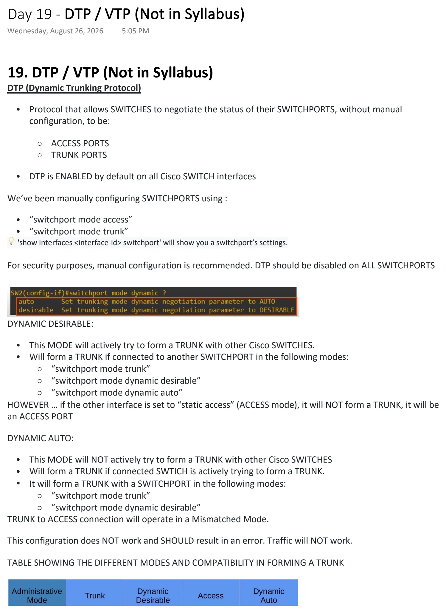
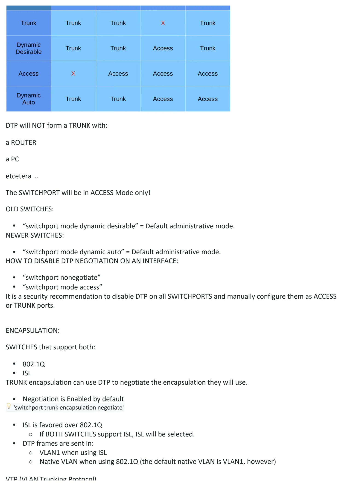
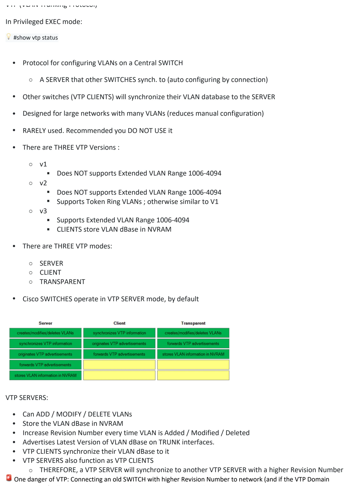
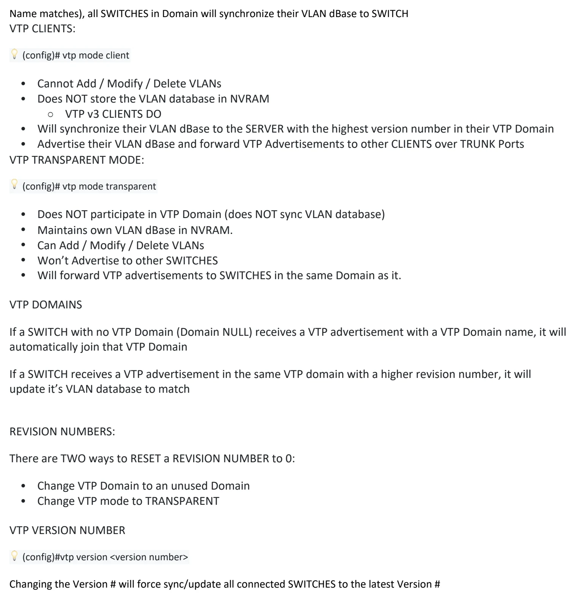

DTP / VTP (Not in Syllabus)
Download original PDF



Text view — DTP / VTP (Not in Syllabus)
Extracted from the original export. Diagrams and some formatting appear in the notes above.
Day 19 - DTP / VTP (Not in Syllabus) Wednesday, August 26, 2026 5:05 PM 19. DTP / VTP (Not in Syllabus) DTP (Dynamic Trunking Protocol) • Protocol that allows SWITCHES to negotiate the status of their SWITCHPORTS, without manual configuration, to be: ○ ACCESS PORTS ○ TRUNK PORTS • DTP is ENABLED by default on all Cisco SWITCH interfaces We’ve been manually configuring SWITCHPORTS using : • “switchport mode access” • “switchport mode trunk” 💡 'show interfaces <interface-id> switchport' will show you a switchport’s settings. For security purposes, manual configuration is recommended. DTP should be disabled on ALL SWITCHPORTS DYNAMIC DESIRABLE: • This MODE will actively try to form a TRUNK with other Cisco SWITCHES. • Will form a TRUNK if connected to another SWITCHPORT in the following modes: ○ “switchport mode trunk” ○ “switchport mode dynamic desirable” ○ “switchport mode dynamic auto” HOWEVER … if the other interface is set to “static access” (ACCESS mode), it will NOT form a TRUNK, it will be an ACCESS PORT DYNAMIC AUTO: • This MODE will NOT actively try to form a TRUNK with other Cisco SWITCHES • Will form a TRUNK if connected SWTICH is actively trying to form a TRUNK. • It will form a TRUNK with a SWITCHPORT in the following modes: ○ “switchport mode trunk” ○ “switchport mode dynamic desirable” TRUNK to ACCESS connection will operate in a Mismatched Mode. This configuration does NOT work and SHOULD result in an error. Traffic will NOT work. TABLE SHOWING THE DIFFERENT MODES AND COMPATIBILITY IN FORMING A TRUNK DTP will NOT form a TRUNK with: a ROUTER a PC etcetera … The SWITCHPORT will be in ACCESS Mode only! OLD SWITCHES: • “switchport mode dynamic desirable” = Default administrative mode. NEWER SWITCHES: • “switchport mode dynamic auto” = Default administrative mode. HOW TO DISABLE DTP NEGOTIATION ON AN INTERFACE: • “switchport nonegotiate” • “switchport mode access” It is a security recommendation to disable DTP on all SWITCHPORTS and manually configure them as ACCESS or TRUNK ports. ENCAPSULATION: SWITCHES that support both: • 802.1Q • ISL TRUNK encapsulation can use DTP to negotiate the encapsulation they will use. • Negotiation is Enabled by default 💡 'switchport trunk encapsulation negotiate' • ISL is favored over 802.1Q ○ If BOTH SWITCHES support ISL, ISL will be selected. • DTP frames are sent in: ○ VLAN1 when using ISL ○ Native VLAN when using 802.1Q (the default native VLAN is VLAN1, however) VTP (VLAN Trunking Protocol) In Privileged EXEC mode: 💡 #show vtp status • Protocol for configuring VLANs on a Central SWITCH ○ A SERVER that other SWITCHES synch. to (auto configuring by connection) • Other switches (VTP CLIENTS) will synchronize their VLAN database to the SERVER • Designed for large networks with many VLANs (reduces manual configuration) • RARELY used. Recommended you DO NOT USE it • There are THREE VTP Versions : ○ v1 § Does NOT supports Extended VLAN Range 1006-4094 ○ v2 § Does NOT supports Extended VLAN Range 1006-4094 § Supports Token Ring VLANs ; otherwise similar to V1 ○ v3 § Supports Extended VLAN Range 1006-4094 § CLIENTS store VLAN dBase in NVRAM • There are THREE VTP modes: ○ SERVER ○ CLIENT ○ TRANSPARENT • Cisco SWITCHES operate in VTP SERVER mode, by default VTP SERVERS: • Can ADD / MODIFY / DELETE VLANs • Store the VLAN dBase in NVRAM • Increase Revision Number every time VLAN is Added / Modified / Deleted • Advertises Latest Version of VLAN dBase on TRUNK interfaces. • VTP CLIENTS synchronize their VLAN dBase to it • VTP SERVERS also function as VTP CLIENTS ○ THEREFORE, a VTP SERVER will synchronize to another VTP SERVER with a higher Revision Number 🚨 One danger of VTP: Connecting an old SWITCH with higher Revision Number to network (and if the VTP Domain Name matches), all SWITCHES in Domain will synchronize their VLAN dBase to SWITCH VTP CLIENTS: 💡 (config)# vtp mode client • Cannot Add / Modify / Delete VLANs • Does NOT store the VLAN database in NVRAM ○ VTP v3 CLIENTS DO • Will synchronize their VLAN dBase to the SERVER with the highest version number in their VTP Domain • Advertise their VLAN dBase and forward VTP Advertisements to other CLIENTS over TRUNK Ports VTP TRANSPARENT MODE: 💡 (config)# vtp mode transparent • Does NOT participate in VTP Domain (does NOT sync VLAN database) • Maintains own VLAN dBase in NVRAM. • Can Add / Modify / Delete VLANs • Won’t Advertise to other SWITCHES • Will forward VTP advertisements to SWITCHES in the same Domain as it. VTP DOMAINS If a SWITCH with no VTP Domain (Domain NULL) receives a VTP advertisement with a VTP Domain name, it will automatically join that VTP Domain If a SWITCH receives a VTP advertisement in the same VTP domain with a higher revision number, it will update it’s VLAN database to match REVISION NUMBERS: There are TWO ways to RESET a REVISION NUMBER to 0: • Change VTP Domain to an unused Domain • Change VTP mode to TRANSPARENT VTP VERSION NUMBER 💡 (config)#vtp version <version number> Changing the Version # will force sync/update all connected SWITCHES to the latest Version # Day 19 - DTP / VTP (Not in Syllabus) Wednesday, August 26, 2026 5:05 PM 19. DTP / VTP (Not in Syllabus) DTP (Dynamic Trunking Protocol) • Protocol that allows SWITCHES to negotiate the status of their SWITCHPORTS, without manual configuration, to be: ○ ACCESS PORTS ○ TRUNK PORTS • DTP is ENABLED by default on all Cisco SWITCH interfaces We’ve been manually configuring SWITCHPORTS using : • “switchport mode access” • “switchport mode trunk” 💡 'show interfaces <interface-id> switchport' will show you a switchport’s settings. For security purposes, manual configuration is recommended. DTP should be disabled on ALL SWITCHPORTS DYNAMIC DESIRABLE: • This MODE will actively try to form a TRUNK with other Cisco SWITCHES. • Will form a TRUNK if connected to another SWITCHPORT in the following modes: ○ “switchport mode trunk” ○ “switchport mode dynamic desirable” ○ “switchport mode dynamic auto” HOWEVER … if the other interface is set to “static access” (ACCESS mode), it will NOT form a TRUNK, it will be an ACCESS PORT DYNAMIC AUTO: • This MODE will NOT actively try to form a TRUNK with other Cisco SWITCHES • Will form a TRUNK if connected SWTICH is actively trying to form a TRUNK. • It will form a TRUNK with a SWITCHPORT in the following modes: ○ “switchport mode trunk” ○ “switchport mode dynamic desirable” TRUNK to ACCESS connection will operate in a Mismatched Mode. This configuration does NOT work and SHOULD result in an error. Traffic will NOT work. TABLE SHOWING THE DIFFERENT MODES AND COMPATIBILITY IN FORMING A TRUNK DTP will NOT form a TRUNK with: a ROUTER a PC etcetera … The SWITCHPORT will be in ACCESS Mode only! OLD SWITCHES: • “switchport mode dynamic desirable” = Default administrative mode. NEWER SWITCHES: • “switchport mode dynamic auto” = Default administrative mode. HOW TO DISABLE DTP NEGOTIATION ON AN INTERFACE: • “switchport nonegotiate” • “switchport mode access” It is a security recommendation to disable DTP on all SWITCHPORTS and manually configure them as ACCESS or TRUNK ports. ENCAPSULATION: SWITCHES that support both: • 802.1Q • ISL TRUNK encapsulation can use DTP to negotiate the encapsulation they will use. • Negotiation is Enabled by default 💡 'switchport trunk encapsulation negotiate' • ISL is favored over 802.1Q ○ If BOTH SWITCHES support ISL, ISL will be selected. • DTP frames are sent in: ○ VLAN1 when using ISL ○ Native VLAN when using 802.1Q (the default native VLAN is VLAN1, however) VTP (VLAN Trunking Protocol) In Privileged EXEC mode: 💡 #show vtp status • Protocol for configuring VLANs on a Central SWITCH ○ A SERVER that other SWITCHES synch. to (auto configuring by connection) • Other switches (VTP CLIENTS) will synchronize their VLAN database to the SERVER • Designed for large networks with many VLANs (reduces manual configuration) • RARELY used. Recommended you DO NOT USE it • There are THREE VTP Versions : ○ v1 § Does NOT supports Extended VLAN Range 1006-4094 ○ v2 § Does NOT supports Extended VLAN Range 1006-4094 § Supports Token Ring VLANs ; otherwise similar to V1 ○ v3 § Supports Extended VLAN Range 1006-4094 § CLIENTS store VLAN dBase in NVRAM • There are THREE VTP modes: ○ SERVER ○ CLIENT ○ TRANSPARENT • Cisco SWITCHES operate in VTP SERVER mode, by default VTP SERVERS: • Can ADD / MODIFY / DELETE VLANs • Store the VLAN dBase in NVRAM • Increase Revision Number every time VLAN is Added / Modified / Deleted • Advertises Latest Version of VLAN dBase on TRUNK interfaces. • VTP CLIENTS synchronize their VLAN dBase to it • VTP SERVERS also function as VTP CLIENTS ○ THEREFORE, a VTP SERVER will synchronize to another VTP SERVER with a higher Revision Number 🚨 One danger of VTP: Connecting an old SWITCH with higher Revision Number to network (and if the VTP Domain Name matches), all SWITCHES in Domain will synchronize their VLAN dBase to SWITCH VTP CLIENTS: 💡 (config)# vtp mode client • Cannot Add / Modify / Delete VLANs • Does NOT store the VLAN database in NVRAM ○ VTP v3 CLIENTS DO • Will synchronize their VLAN dBase to the SERVER with the highest version number in their VTP Domain • Advertise their VLAN dBase and forward VTP Advertisements to other CLIENTS over TRUNK Ports VTP TRANSPARENT MODE: 💡 (config)# vtp mode transparent • Does NOT participate in VTP Domain (does NOT sync VLAN database) • Maintains own VLAN dBase in NVRAM. • Can Add / Modify / Delete VLANs • Won’t Advertise to other SWITCHES • Will forward VTP advertisements to SWITCHES in the same Domain as it. VTP DOMAINS If a SWITCH with no VTP Domain (Domain NULL) receives a VTP advertisement with a VTP Domain name, it will automatically join that VTP Domain If a SWITCH receives a VTP advertisement in the same VTP domain with a higher revision number, it will update it’s VLAN database to match REVISION NUMBERS: There are TWO ways to RESET a REVISION NUMBER to 0: • Change VTP Domain to an unused Domain • Change VTP mode to TRANSPARENT VTP VERSION NUMBER 💡 (config)#vtp version <version number> Changing the Version # will force sync/update all connected SWITCHES to the latest Version # Day 19 - DTP / VTP (Not in Syllabus) Wednesday, August 26, 2026 5:05 PM 19. DTP / VTP (Not in Syllabus) DTP (Dynamic Trunking Protocol) • Protocol that allows SWITCHES to negotiate the status of their SWITCHPORTS, without manual configuration, to be: ○ ACCESS PORTS ○ TRUNK PORTS • DTP is ENABLED by default on all Cisco SWITCH interfaces We’ve been manually configuring SWITCHPORTS using : • “switchport mode access” • “switchport mode trunk” 💡 'show interfaces <interface-id> switchport' will show you a switchport’s settings. For security purposes, manual configuration is recommended. DTP should be disabled on ALL SWITCHPORTS DYNAMIC DESIRABLE: • This MODE will actively try to form a TRUNK with other Cisco SWITCHES. • Will form a TRUNK if connected to another SWITCHPORT in the following modes: ○ “switchport mode trunk” ○ “switchport mode dynamic desirable” ○ “switchport mode dynamic auto” HOWEVER … if the other interface is set to “static access” (ACCESS mode), it will NOT form a TRUNK, it will be an ACCESS PORT DYNAMIC AUTO: • This MODE will NOT actively try to form a TRUNK with other Cisco SWITCHES • Will form a TRUNK if connected SWTICH is actively trying to form a TRUNK. • It will form a TRUNK with a SWITCHPORT in the following modes: ○ “switchport mode trunk” ○ “switchport mode dynamic desirable” TRUNK to ACCESS connection will operate in a Mismatched Mode. This configuration does NOT work and SHOULD result in an error. Traffic will NOT work. TABLE SHOWING THE DIFFERENT MODES AND COMPATIBILITY IN FORMING A TRUNK DTP will NOT form a TRUNK with: a ROUTER a PC etcetera … The SWITCHPORT will be in ACCESS Mode only! OLD SWITCHES: • “switchport mode dynamic desirable” = Default administrative mode. NEWER SWITCHES: • “switchport mode dynamic auto” = Default administrative mode. HOW TO DISABLE DTP NEGOTIATION ON AN INTERFACE: • “switchport nonegotiate” • “switchport mode access” It is a security recommendation to disable DTP on all SWITCHPORTS and manually configure them as ACCESS or TRUNK ports. ENCAPSULATION: SWITCHES that support both: • 802.1Q • ISL TRUNK encapsulation can use DTP to negotiate the encapsulation they will use. • Negotiation is Enabled by default 💡 'switchport trunk encapsulation negotiate' • ISL is favored over 802.1Q ○ If BOTH SWITCHES support ISL, ISL will be selected. • DTP frames are sent in: ○ VLAN1 when using ISL ○ Native VLAN when using 802.1Q (the default native VLAN is VLAN1, however) VTP (VLAN Trunking Protocol) In Privileged EXEC mode: 💡 #show vtp status • Protocol for configuring VLANs on a Central SWITCH ○ A SERVER that other SWITCHES synch. to (auto configuring by connection) • Other switches (VTP CLIENTS) will synchronize their VLAN database to the SERVER • Designed for large networks with many VLANs (reduces manual configuration) • RARELY used. Recommended you DO NOT USE it • There are THREE VTP Versions : ○ v1 § Does NOT supports Extended VLAN Range 1006-4094 ○ v2 § Does NOT supports Extended VLAN Range 1006-4094 § Supports Token Ring VLANs ; otherwise similar to V1 ○ v3 § Supports Extended VLAN Range 1006-4094 § CLIENTS store VLAN dBase in NVRAM • There are THREE VTP modes: ○ SERVER ○ CLIENT ○ TRANSPARENT • Cisco SWITCHES operate in VTP SERVER mode, by default VTP SERVERS: • Can ADD / MODIFY / DELETE VLANs • Store the VLAN dBase in NVRAM • Increase Revision Number every time VLAN is Added / Modified / Deleted • Advertises Latest Version of VLAN dBase on TRUNK interfaces. • VTP CLIENTS synchronize their VLAN dBase to it • VTP SERVERS also function as VTP CLIENTS ○ THEREFORE, a VTP SERVER will synchronize to another VTP SERVER with a higher Revision Number 🚨 One danger of VTP: Connecting an old SWITCH with higher Revision Number to network (and if the VTP Domain Name matches), all SWITCHES in Domain will synchronize their VLAN dBase to SWITCH VTP CLIENTS: 💡 (config)# vtp mode client • Cannot Add / Modify / Delete VLANs • Does NOT store the VLAN database in NVRAM ○ VTP v3 CLIENTS DO • Will synchronize their VLAN dBase to the SERVER with the highest version number in their VTP Domain • Advertise their VLAN dBase and forward VTP Advertisements to other CLIENTS over TRUNK Ports VTP TRANSPARENT MODE: 💡 (config)# vtp mode transparent • Does NOT participate in VTP Domain (does NOT sync VLAN database) • Maintains own VLAN dBase in NVRAM. • Can Add / Modify / Delete VLANs • Won’t Advertise to other SWITCHES • Will forward VTP advertisements to SWITCHES in the same Domain as it. VTP DOMAINS If a SWITCH with no VTP Domain (Domain NULL) receives a VTP advertisement with a VTP Domain name, it will automatically join that VTP Domain If a SWITCH receives a VTP advertisement in the same VTP domain with a higher revision number, it will update it’s VLAN database to match REVISION NUMBERS: There are TWO ways to RESET a REVISION NUMBER to 0: • Change VTP Domain to an unused Domain • Change VTP mode to TRANSPARENT VTP VERSION NUMBER 💡 (config)#vtp version <version number> Changing the Version # will force sync/update all connected SWITCHES to the latest Version # Day 19 - DTP / VTP (Not in Syllabus) Wednesday, August 26, 2026 5:05 PM 19. DTP / VTP (Not in Syllabus) DTP (Dynamic Trunking Protocol) • Protocol that allows SWITCHES to negotiate the status of their SWITCHPORTS, without manual configuration, to be: ○ ACCESS PORTS ○ TRUNK PORTS • DTP is ENABLED by default on all Cisco SWITCH interfaces We’ve been manually configuring SWITCHPORTS using : • “switchport mode access” • “switchport mode trunk” 💡 'show interfaces <interface-id> switchport' will show you a switchport’s settings. For security purposes, manual configuration is recommended. DTP should be disabled on ALL SWITCHPORTS DYNAMIC DESIRABLE: • This MODE will actively try to form a TRUNK with other Cisco SWITCHES. • Will form a TRUNK if connected to another SWITCHPORT in the following modes: ○ “switchport mode trunk” ○ “switchport mode dynamic desirable” ○ “switchport mode dynamic auto” HOWEVER … if the other interface is set to “static access” (ACCESS mode), it will NOT form a TRUNK, it will be an ACCESS PORT DYNAMIC AUTO: • This MODE will NOT actively try to form a TRUNK with other Cisco SWITCHES • Will form a TRUNK if connected SWTICH is actively trying to form a TRUNK. • It will form a TRUNK with a SWITCHPORT in the following modes: ○ “switchport mode trunk” ○ “switchport mode dynamic desirable” TRUNK to ACCESS connection will operate in a Mismatched Mode. This configuration does NOT work and SHOULD result in an error. Traffic will NOT work. TABLE SHOWING THE DIFFERENT MODES AND COMPATIBILITY IN FORMING A TRUNK DTP will NOT form a TRUNK with: a ROUTER a PC etcetera … The SWITCHPORT will be in ACCESS Mode only! OLD SWITCHES: • “switchport mode dynamic desirable” = Default administrative mode. NEWER SWITCHES: • “switchport mode dynamic auto” = Default administrative mode. HOW TO DISABLE DTP NEGOTIATION ON AN INTERFACE: • “switchport nonegotiate” • “switchport mode access” It is a security recommendation to disable DTP on all SWITCHPORTS and manually configure them as ACCESS or TRUNK ports. ENCAPSULATION: SWITCHES that support both: • 802.1Q • ISL TRUNK encapsulation can use DTP to negotiate the encapsulation they will use. • Negotiation is Enabled by default 💡 'switchport trunk encapsulation negotiate' • ISL is favored over 802.1Q ○ If BOTH SWITCHES support ISL, ISL will be selected. • DTP frames are sent in: ○ VLAN1 when using ISL ○ Native VLAN when using 802.1Q (the default native VLAN is VLAN1, however) VTP (VLAN Trunking Protocol) In Privileged EXEC mode: 💡 #show vtp status • Protocol for configuring VLANs on a Central SWITCH ○ A SERVER that other SWITCHES synch. to (auto configuring by connection) • Other switches (VTP CLIENTS) will synchronize their VLAN database to the SERVER • Designed for large networks with many VLANs (reduces manual configuration) • RARELY used. Recommended you DO NOT USE it • There are THREE VTP Versions : ○ v1 § Does NOT supports Extended VLAN Range 1006-4094 ○ v2 § Does NOT supports Extended VLAN Range 1006-4094 § Supports Token Ring VLANs ; otherwise similar to V1 ○ v3 § Supports Extended VLAN Range 1006-4094 § CLIENTS store VLAN dBase in NVRAM • There are THREE VTP modes: ○ SERVER ○ CLIENT ○ TRANSPARENT • Cisco SWITCHES operate in VTP SERVER mode, by default VTP SERVERS: • Can ADD / MODIFY / DELETE VLANs • Store the VLAN dBase in NVRAM • Increase Revision Number every time VLAN is Added / Modified / Deleted • Advertises Latest Version of VLAN dBase on TRUNK interfaces. • VTP CLIENTS synchronize their VLAN dBase to it • VTP SERVERS also function as VTP CLIENTS ○ THEREFORE, a VTP SERVER will synchronize to another VTP SERVER with a higher Revision Number 🚨 One danger of VTP: Connecting an old SWITCH with higher Revision Number to network (and if the VTP Domain Name matches), all SWITCHES in Domain will synchronize their VLAN dBase to SWITCH VTP CLIENTS: 💡 (config)# vtp mode client • Cannot Add / Modify / Delete VLANs • Does NOT store the VLAN database in NVRAM ○ VTP v3 CLIENTS DO • Will synchronize their VLAN dBase to the SERVER with the highest version number in their VTP Domain • Advertise their VLAN dBase and forward VTP Advertisements to other CLIENTS over TRUNK Ports VTP TRANSPARENT MODE: 💡 (config)# vtp mode transparent • Does NOT participate in VTP Domain (does NOT sync VLAN database) • Maintains own VLAN dBase in NVRAM. • Can Add / Modify / Delete VLANs • Won’t Advertise to other SWITCHES • Will forward VTP advertisements to SWITCHES in the same Domain as it. VTP DOMAINS If a SWITCH with no VTP Domain (Domain NULL) receives a VTP advertisement with a VTP Domain name, it will automatically join that VTP Domain If a SWITCH receives a VTP advertisement in the same VTP domain with a higher revision number, it will update it’s VLAN database to match REVISION NUMBERS: There are TWO ways to RESET a REVISION NUMBER to 0: • Change VTP Domain to an unused Domain • Change VTP mode to TRANSPARENT VTP VERSION NUMBER 💡 (config)#vtp version <version number> Changing the Version # will force sync/update all connected SWITCHES to the latest Version #